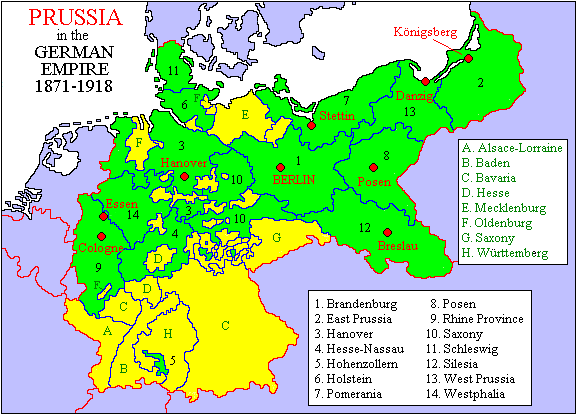

Volume I · 1525 — 1947
It built modern Germany, fought four wars in seven years, and produced Kant, Hegel, and Bismarck — and then, in a single Allied decree on the 25th of February 1947, was declared to have never existed.
Foreword

Most people, when they hear the word, think of three things: spiked helmets, military parades, and a goose-step. They are not entirely wrong. They are also not at all right.
Prussia was, depending on the century you choose, a Baltic pagan tribe, a crusader state, a Lutheran duchy, the most-feared army in Europe, the engine of German unification, a constitutional state that gave us universal public education and the first modern welfare system, and finally — in its last form — a province of a republic, then a province of a dictatorship, then nothing at all. It was abolished by law. The law was Allied Control Council Law No. 46. The date was 25 February 1947. The first line reads, in the original: "The Prussian State, which from early days has been a bearer of militarism and reaction in Germany, has de facto ceased to exist."
That sentence is a misreading of four hundred and twenty-two years of history. The Lost Lands volume on Prussia is an attempt to unwind it — not to defend Prussia (it does not need defending; it is gone) but to recover it. To explain how a sandy, half-Slavic, forest-and-bog province on the Baltic became, briefly, the most important kingdom in Europe. To name its triumphs and its terrible failures. And then to send you walking through the cities, palaces, battlefields, and small towns where it can still be felt — in Berlin and Potsdam, of course, but also in Wrocław and Gdańsk, in Kaliningrad and Olsztyn, in the windbreaks of the East Prussian plain and the gravel paths of Sanssouci.
You are about to read a long book. You can read it in one evening or across a fortnight. When you finish, you will know what Prussia was. And — if you choose — you will know exactly where to go to stand inside it.
"I shall be the first servant of the state." — Frederick II of Prussia, 1740
The Book — fourteen chapters
After the book — three ways to travel inside Prussia
The Guide
Every region of the former Prussian state, city by city. Berlin, Potsdam, Königsberg / Kaliningrad, Danzig / Gdańsk, Breslau / Wrocław, Marienburg / Malbork, and twenty others. What to see and why it matters.
The Routes
The Hohenzollern Route, through the heart of Brandenburg. The Teutonic Route, north along the Vistula. The Battlefield Route, from Jena to Sedan. The Amber Route, along the Baltic coast.
The Errors
Prussia was not Germany. The goose-step did not start in Berlin. Frederick the Great did not, in fact, plant potatoes himself. Eleven beliefs about Prussia laid politely to rest.